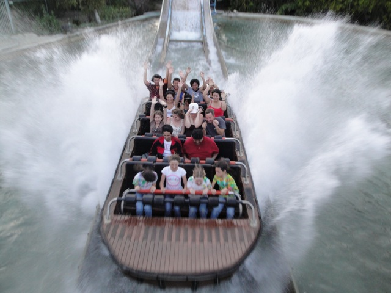
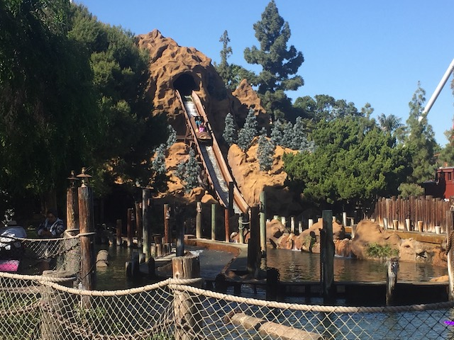
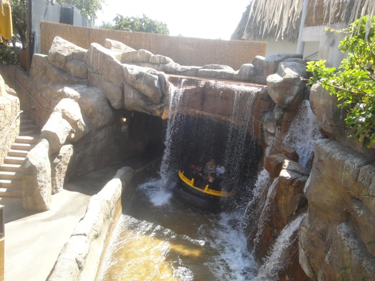
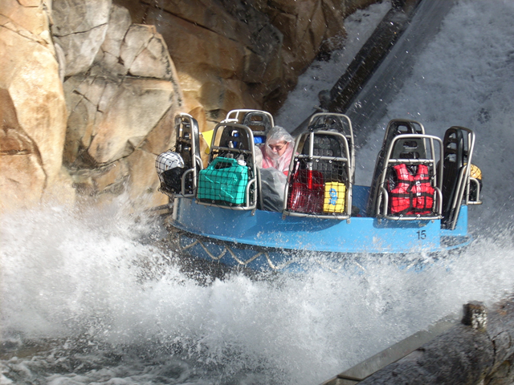
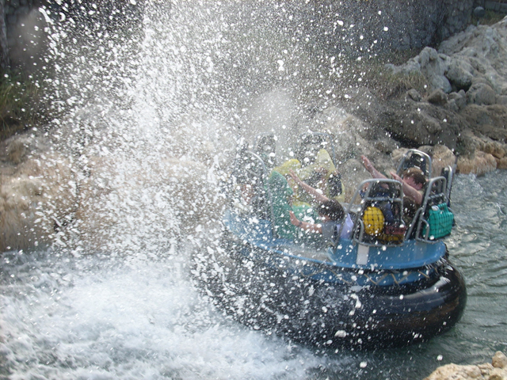
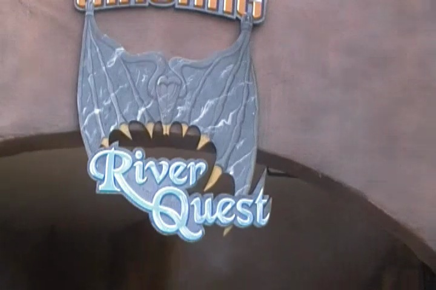
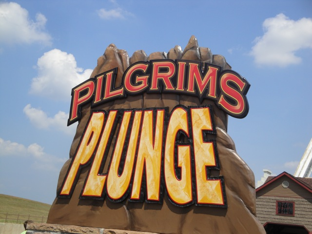

| |
Top 10 Water Rides

Welcome to an Incrediblecoasters Top 10 List. When we list stuff, we actually explain why. Water Rides. Now that summer is here, the weather is getting hotter and hotter, and the popularity of water rides is growing and growing. People at amusement parks right now are like "Dude, I know X2 is an amazing ride and all, but it is just so f*cking hot outside!!! I mean you could fry bacon on the sidewalk!!! It's been getting so hot (thank you climate change, and F*ck you climate deniers. You're literally killing everyone assholes!) that everything's literally melting everything!. So while X2 is good and all, we're gonna go on Roaring Rapids to cool off." And yeah. Roaring Rapids will cool you off. However, it's not just cooling off that makes us crave water rides oh so much. Because really, if you only cared about cooling off, then I'd just recommend you do this. But there's much more to water rides that we all love. The idea of going down a drop and splashing down is very popular with guests, and hence, log rides are ridicously popular. Look at any GP Movie Amusement Park and there's always a log ride. Another popular water ride, is the River Raft. This symbolizes going down a raging river while going white water rafting, which always is popular with guests (And some of the better models actually have drops ). This not only gives you a chance to cool off that you really need, but it also gives you with a really good time. However, not all water rides are equal. Some may just be ordinary, and some are simply extrodinary. So, without any further delay, here are the Top 10 Water Rides.

#10.

Timber Mountain Log Ride @
Knotts Berry Farm
Buena Park, California, U.S.A
One of the first rides to appear in Knotts Berry Farm when it was becoming a theme park, Timber Mtn Log Ride isn't some carnival mounted log ride that you see traveling around in many fairs or not well themed theme parks. It may not be Splash Mountain, but it's got some decent theming. In the second half of the ride, there's some sort of logging theme as well as an old western theme, which is really cool. You see a starry night and some trees. You can hear a coyote howling, you try to find him so you can eat him and not pay $10.00 to upgrade to a combo for lunch. It's a really fun theme. And you not only have the main big drop at the end, but there's also a surprise drop in the middle, that's really fun. But what really makes this ride so much fun, is setting off the censor. If you raise your arms throughout the ride, it will go ape-sh*t and yell "SIT DOWN!!!". I'm sorry, but that's just hilarious. At this point, it's such a running joke that you see us riding with our hands in the air and then howling like hyenas. Yeah, we may look like lunatics, but I don't care! I sort of am one anyway! But yeah. I used to have a job literally just yelling at people to sit down on Roaring Rapids. So I'm particuarly amused by all that. So yeah. Timber Mtn Log Ride. SIT DOWN!!!!
#9.

Jurrasic Park @
Universal Studios Japan
Osaka, Osaka, Japan
This is a much more well known water ride than Timber Mountain Log Ride. Hell, this water ride is so well known, that it has its very own Wikipedia Article. Anyways, Jurrasic Park is a very basic water ride. You first cruise around and see lots of dinosaurs. Then you go in a building, climb the lifthill, some guy yells "Get out of here!!! There's a T-Rex in here!!!", (they yell it in Japanese, cause....we're in Japan dipsh*t) we then go down the final drop. Now I will admit this. The drop is dissapointing. People claim it's a big drop and all. But that's bullsh*t. That drop is Tidal Wave sized I'd say. Not intense (If you keep reading this list, you'll see the water rides that had both the biggest drop, and the most intense drop. Both of which were much bigger, more intense, and better than Jurrasic Park). But still, I really like the dark ride portion in the begenning, and plus, a water ride themed to Jurrasic Park is awesome, regardless of drop size. And plus, the ride has a dinosaur spit on people. =) I totally know a lot of people who deserve to be spitten on by (or eaten) by a dinosaur. Hmm. Perhaps that should be my next Top 10 List. Oh well. Jurrsaic Park. Spitting Dinosaurs totally make it worth the #9 spot.
#8.

Shipwreck Rapids @
Sea World San Diego
San Diego, California, U.S.A
Located at Sea World San Diego, Shipwreck Rapids is much better than your everyday typical river rapids ride. First of all, Shipwreck Rapids not only has a bunch of theming, that is really on par with all of the Busch and Sea World Parks. I mean, they do just an absolute FANTASTIC job of making Shipwreck Rapids into a journey on a white water river. But on top of all the high quality theming, this is a really REALLY good rapids ride. There are plenty of rapids on this rapids ride and they are just a ton of fun. They bump you up and bounce you around. And lets not forget. THE WATERFALL!!!! If you thought there was ANY possibility of you making it out unscathed on Shipwreck Rapids, THINK AGAIN PAL!!!! Every single rapid will throw water directly in your boat and if you manage to make it out alive through all of that, the waterfall will make sure that you are drenched down to the bone. Shipwreck Rapids. You can't escape the water mateys.
#7.

Kali River Rapids @
Walt Disney World Resort
Lake Buena Vista, Florida, U.S.A
Located in Disney's Animal Kingdom, which is within the Walt Disney World Resort, Kali River Rapids is much more than your everyday typical river rapids ride. Kali River Rapids is steaming, not only with really good rapids for you to go over, some really good theming, and great atmosphere like on Shipwreck Rapids. Kali River Rapids has all that and even a small drop. And trust me, a drop on a river rapids ride is NOT a common sight. Most river rapids rides do not contain drops. And to make things even better for Kali River Rapids, they have water cannons to soak riders with. And that always makes for some incredible laughs, but as if that wasn't enough, they're free!!!!! Yep. The water cannons at Kali River Rapids are actually free. So while I'm waiting to use my Expedition Everest Fastpass, You'll know where to find me. ;) Now from what I've heard, Kali River Rapids also has fire, but during my visit, I never saw any fire. None whatsoever. But oh well. This ride is still awesome anyways, and totally deserves the #6 spot on this countdown. Kali River Rapids. Come on Pink Sweater Girl. Take a ride (Evil Laugh).
#6.

Grizzly River Run @
Disneyland Resort
Anaheim, California, U.S.A
Located in the Disneyland Resort in Anaheim CA, Grizzly River Run is the West Coast Equivelant of Kali River Rapids. And like Kali River Rapids, Grizzly River Run is a very excellent rapids ride. It too, has some nice rapids, a good atmosphere, and a fun drop. But there are few minor things that made me give Grizzly River Run the edge. First of all, Grizzly River Run has 2 drops, and not just one. And not only does Grizzly River Run have Kali River Rapid's drop in the middle of the ride, but it also has a bigger drop at the end of the ride. This drop is a lot bigger than Kali's drop. Hell, the final drop on Grizzly River Run is about the same size as some of the smaller log flumes out there. And to add to that, there are simply more oppertunities to get wet on Grizzly River Run as the lifthill gets you wet if you sit in the right spot, and of course, there's the geyser. So yeah. Grizzly River Run. It's more fun than going white water rafting with a Grizzly Bear.

#5.

Rattlesnake Rapids @
Lagoon
Farmington, Utah, U.S.A
Located in Lagoon, near Salt Lake City, Utah, this is a water ride that I'm sure the vast majority of you are not familiar with at all. Most coaster enthusiasts have not been to Lagoon (and they should because this park is AWESOME). And even among those who have visited Lagoon, they rarely talk about Rattlesnake Rapids. So what is it that makes this water ride so damn good? Well first off, the setting for this ride is just damn beautiful. Lagoon already has a great setting right against the mountains and isn't too far off from the Great Salt Lake. But even within the park, Rattlesnake Rapids is very isolated from the rest of Lagoon, just out near Pioneer Village, floating along by a river that actually runs through the park. The rapids ride even goes through a butterfly room, which just looks fantastic. And on top of that, its EXTREMELY effective. If you want to get wet, you're in luck. You will not be spared on Rattlesnake Rapids. Don't even try to escape the water. I mean, if you think that something like Shipwreck Rapids will get you wet, this is MUCH WORSE. I hope more people catch onto how great this water ride is because I only discovered it by accident and was *this* close to not riding it. So make sure you keep this in mind when you visit Lagoon (You really should) and ride Rattlesnake Rapids. You won't regret it.

#4.

River Quest @
Phantasialand
Brühl, North Rhine-Westphalia, Germany
Located in Phantasialand, in Germany, River Quest is without a doubt, the best rapids ride in the world. Everything nice I had to say about all the other rapids rides on this list applies directly to River Quest. Nice Setting? River Quest is located in a beautiful highly themed German Park filled with gardens and is surrounded by castles!!! Gets you wet? River Quest has got to be the wettest water ride I ever rode. I got more drenched on this ride than I did from jumping into a pool and swimming for an hour. Every square inch (or centimeter since we're in Europe) got DRENCHED!!! No other water ride comes even CLOSE to getting you this wet. I mean Rattlesnake Rapids got me wet, but this got me SOAKED!! I wasn't dry until I was in France. Drops? River Quest has not one, not two, but THREE drops!!! All of them of decent size!!! And its got a dark ride section, a whirlpool, and even an elevator lift. Yeah. That is freaking badass!!! Definetly make sure you check out River Quest while at Phantasialand. No other rapids ride comes close.
#3.

Pilgrim's Plunge @
Holiday World
Santa Clause, Indiana, U.S.A
This ride was in Holiday World. Yeah, was. Pilgrim's Plunge no longer exists. AWWW!!!! LAME!!! ='( Anyways, Pilgrim's Plunge was not your everyday run of the mill shoot the chutes ride. This thing was on freaking steroids. And for ordinary people visiting the park, it was pretty damn intimidating to just see a giant drop in the sky and two metal towers. The elevator lift on Pilgrim's Plunge was awesome for several different reasons. First of all, it saved a lot of space (though now that it's gone, that doesn't matter). And not only that, but because the elevator lift is not completely vertical, you don't just climb up to the top. You actually get a few laterals on the lift. Not any real laterals, but enough to make you feel unsteady as you're climbing several stories in the air. Oh, and the fact that this was the biggest water ride (Divertical is a water coaster and doesn't qualify for this list) in the world really made the climb more intimidating, the drop more awesome, and the ride better. Because let's face it. A 135 foot drop on a water ride kicks ass. Pilgrim's Plunge. The technology still exists on Divertical, which not only has the same lift, but is much bigger, and is a freaking water coaster. So go ride that!

#2.

Perilous Plunge @
Knotts Berry Farm
Buena Park, California, U.S.A
Located at Knotts Berry Farm, which sadly got rid of this ride. F*CKING LAME!!!! THIS RIDE WAS AWESOME!!! R.I.P. Peroulis Plunge was another great water ride. Like Pilgrim's Plunge, Perilous Plunge was a giant shoot the chutes on steroids. However, while Pilgrims Plunge may have been 20 ft bigger and had a really coll elevator lift that gave you a great view of Holiday World, it doesn't have something that Perilous Plunge did (Why is it that the best Shoot the Chutes got demolished?). 75 degree angle drop. What more do I need to say. Not only is the turn after the lift extremely awkward, but that 75 degree drop seems f*cking vertical when you're about to go over it, but before you could say anything, you were yanked over it, resulting in one of the best moments of airtime, and what was without a doubt, the best moment of airtime in California (luckily, now we have Twisted Collosus. So there's ejector air in our state again) and on any water ride anywhere. It's just insane. Perilous Plunge. It may be gone from Knotts Berry Farm, but make sure you check out its clone at Oakwood in Wales. Its just too awesome.
 
#1.
Splash Mountain @
Tokyo Disney Resort
Urayasy, Chiba, Japan
Ok, I'm sure that just about everyone knows what this water ride is. And if you don't know what this water ride is, stop living underneath a f*cking rock! Splash Mountain is one of the rides that everyone thinks about when they hear about Disney Parks. It's the ideal log flume. You just mention log ride to someone and whether they know it or not, they'll be singing to themselves Zip-A-Dee-Doo-Dah, and no drop comes to more people's minds than the final drop of Splash Mountain. And it is a really good log flume drop. Famous or not. Now granted, this may be changing since....some people don't like the ride due to the movie it's based off being racist. And....yeah. "Song of the South" is a racist movie (You CAN NOT defend the Tar Baby. If you do, you're racist #SorryNotSorry). However, Splash Mountain fixed ALL of the issues with the movie that made it problematic, and it still became a classic. But that wasn't enough because Disney wants the movie erased and they removed it at Disneyland & Disney World, replacing it with "Tiana's Bayou Adventure". I have low expectations for that, and am NOT happy with that decision. I stand by EVERYTHING I said in my Splash Mountain Rant/Essay. #SorryNotSorry But hey. At least you can ride it at Tokyo Disneyland. Another big win for Japan (and yet ANOTHER reason that Tokyo Disney is my favorite Disney property). The ride also has two other drops, a small drop in the begenning, and another drop, which is my personal favorite. After getting a good look at Brer Bear's ass, you drop down a drop, but then rise up before splashing. This is without a doubt, the most underrated part of the ride. It's definetly my favorite part of the ride. It's a great log flume with great drops, and a great theme. Splash Mountain. The #1 Log Ride for Incrediblecoasters.
 
So now I'm sure you know what you're thinking. "Wow. That was the list. That is so wrong." Well no. First of all, this list can not be entirely accurate since I haven't been on every single water ride in the world, so until I do, this list will never truely be accurate. And new ones will be built, so technically, no list will last forever. But really, does it need to? The world isn't exactly dripping with amazing water rides to go out and ride. And really, this list contains some of the best water rides in the world. Splash Mountain is the worlds most famous and popular water ride, and the giant insane shoot the chutes, Perilous Plunge and Pilgrims Plunge are some of the highest rated water rides out there. The only highly rated water rides that couldn't make my list since I didn't ride them were the water rides at Islands of Adventures. Other than that, I don't know of any really highly rated water rides. Now I may totally be unknowingly dissing some great underrated water rides I haven't ridden. But hey, if they're truely great, they'll shine through and wow the crap out of me later on. And besides, this list shows of 10 really cool water rides that provide you with a great way to cool off.
|
{kind=link}